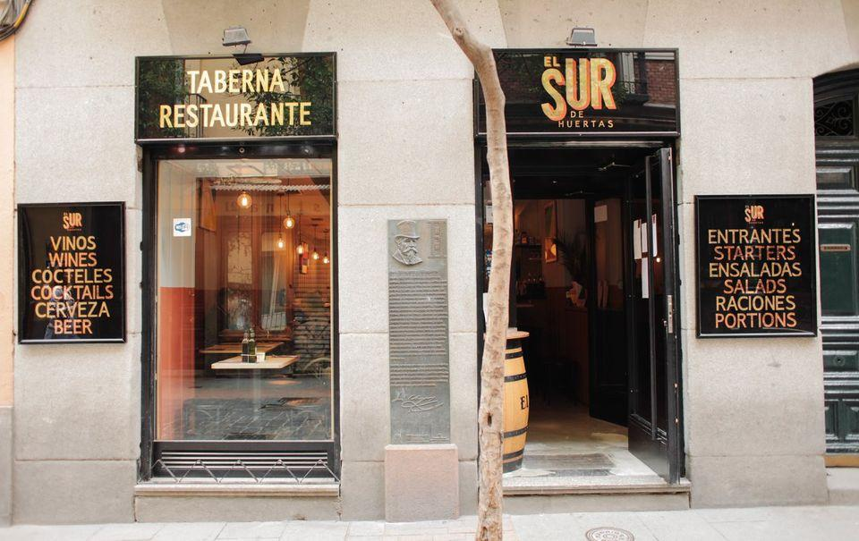

Restaurants und Bars in Madrid
Lust in der spanischen Küche unterzutauchen? Unsere Top 10 Restaurants und Bars in Madrid:
-
Bodega de la Ardosa
Hier bekommt man eine große Auswahl irischer Biere zu erschwinglichen Preisen, Wermut vom Fass, helle Biere und gute Ribera- und Rioja-Weine. Zur Stärkung werden unter anderem verschiedene Kanapees, kalte Gemüsesuppe, Gepökeltes, Dörrfleisch aus León, Entenschinken und spanische Tortilla serviert.
-
Entre Santos Madrid
Hier wird eine neue Art von Gastronomie ausgeübt, die als Coktail and Food bekannt ist. Die Auswahl an Cocktails, Weine und Biere wird mit einem großen Angebot an mediteranischen Tapas komplimentiert.
-
Salmon Guru
Eines der besten Orte um in Madrid unglaubliche Cocktails zu probieren.
-
Taberna El Sur de Huertas
In dieser Taverne kann man richtiges, traditionelles, spanisches Essen kosten.
 -
Bar Melo's
Auch hier kann man Tapas zu einem erschwinglichen Preis essen. Das beste hier sind die Schinken Kroketten.
-
El Respiro
Hier gibt es die traditionellen Tapas sehr preiswertig.
-
Taberna de Paula
Ein perfekter Ort um Tapas zu essen oder eine Vorspeise zu bekommen. Die große Auswahl an Gerichten machen den perfekten Bar um mit Freunden hinzugehen aus.

-
La Descarada
Hier bereiten sie die Speisen, die schon die spanischen Grossmütter vorbereitet haben. Richtig leckeres Essen, das dich direkt in deine Kindheit versetzt!
-
Mano de Santa
Diese Einrichtung vetretet eine Küche von überall auf der Welt. Sie folgt der Gastronomie der Reise, unterdem man versteht, dass es Gerichte und Geschmacksrichtung der ganzen Welt gibt.
-
Restaurante Rias Bajas
Die Spezialität dieses Restaurants ist die galizianische Küche.